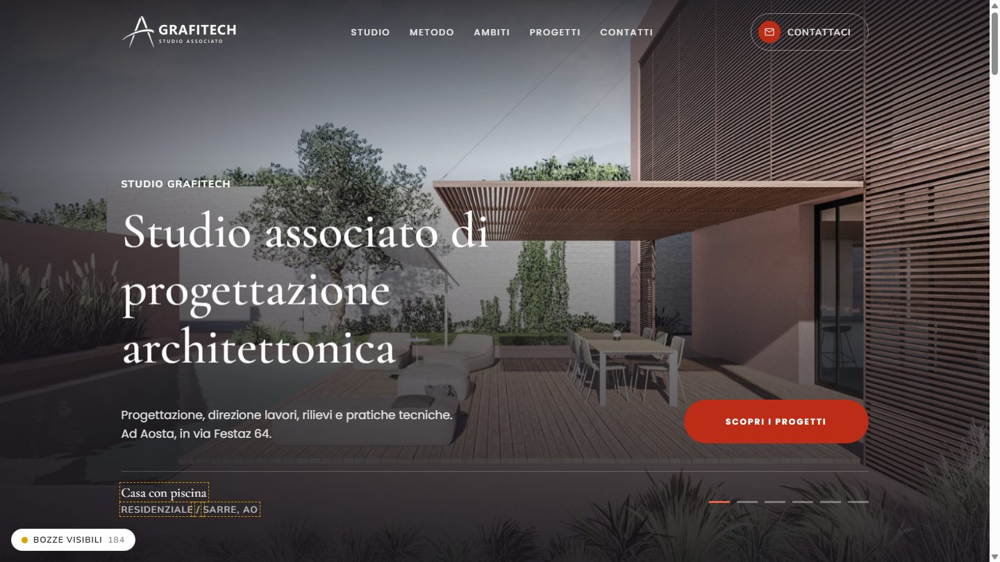

Studio Grafitech · Aosta
Il sito attuale (grafitech.vda.it) è una pagina WordPress con il tema di serie: nome, claim, indirizzo, orari, contatti e i tre soci. Il nuovo sito parte da quei dati, li corregge dove serviva e li inserisce in una landing completa con l'identità visiva ricavata dal logo dello studio.

L'apertura del nuovo sito: claim originale dello studio, servizi e indirizzo reali, palette del logo. Foto e didascalia del progetto sono provvisorie (riquadro tratteggiato = bozza da confermare).
1 · Questa introduzione
2 · La palette e la tipografia, con i contrasti misurati
3 · Gli errori del sito attuale e quelli corretti durante il lavoro
4 · I miglioramenti, le verifiche e ciò che resta da fare
I testi non presenti sul sito attuale e le foto provvisorie sono marcati come bozza. Il tasto in basso a sinistra nel sito li mostra o li nasconde, così lo studio vede subito cosa va confermato.
La palette
I colori sono misurati sui pixel del logo dello studio: il rosso mattone dell'arco e l'antracite delle aste del compasso. Tutto il resto è una scala di neutri caldi che li lascia lavorare. Il sito attuale invece usava i colori di serie del tema WordPress (giallo, lilla, viola), scollegati dal marchio.
Contrasti misurati (WCAG 2.1, soglia AA 4.5:1)
| Combinazione | Uso | Rapporto | Esito |
|---|---|---|---|
| AaRosso #BD2C16 su bianco | link, testo in evidenza | 5.94 : 1 | AA |
| AaBianco su bottone rosso | CTA "Scopri i progetti", "Scrivici" | 5.94 : 1 | AA |
| AaRosso chiaro #E5624A su antracite | occhielli nella sezione contatti | 5.22 : 1 | AA |
| AaRosso del logo su antracite | scartato: sotto soglia | 2.99 : 1 | No |
| AaTesto #4B4A4F su bianco | paragrafi | 8.78 : 1 | AAA |
| AaGrigio #717171 su bianco | didascalie | 4.88 : 1 | AA |
Tipografia
Errori corretti
Nessuna meta description. Google sceglieva da solo il testo da mostrare nei risultati. Ora c'è una descrizione scritta (servizi + città), sotto i 160 caratteri.
Email e telefono non cliccabili. Erano solo testo: da telefono bisognava copiarli a mano. Ora email e telefono si aprono con un tocco, anche dal menu mobile e dal footer.
Numero di cellulare scritto male. "+39 3475767 538": spazio nel punto sbagliato. Nel nuovo sito non è pubblicato: va confermato dallo studio prima di inserirlo.
Indirizzo incompleto. Solo "via Festaz 64, Aosta", senza CAP né provincia. Ora "Via Festaz 64, 11100 Aosta (AO)", con mappa e link a Google Maps.
Nessun menu, footer vuoto, pagine standard in errore 404 (chi siamo, contatti, privacy, cookie). Ora menu a 5 voci, menu mobile, footer con navigazione, recapiti e dati legali.
Colori del tema di serie (giallo #FFEE58, lilla, viola) e logo piccolo 60×57 px. Ora palette ricavata dal logo e logo orizzontale con il segno originale e il nome dello studio.
Nessuna anteprima per social e WhatsApp, nessun dato strutturato, nome del sito vuoto in WordPress, logo senza testo alternativo. Ora anteprima con immagine e titolo, scheda "studio professionale" con indirizzo e telefono per Google, sitemap e testi alternativi.
Il rosso del logo non era leggibile sui fondi scuri (2.99:1, sotto la soglia AA). Il marchio è stato sdoppiato: rosso originale sui fondi chiari, rosso schiarito #E5624A (5.22:1) sull'antracite.
Profili social segnaposto nei dati per Google. Lo studio non ha social collegati: i link vuoti vengono esclusi dalla scheda strutturata invece di finire indicizzati.
Residui del modello di partenza. Nomi di file, nome del pacchetto e commenti appartenenti ad altri progetti sono stati ripuliti: nel codice non resta nessun dato di altri clienti.
Barra "/" orfana fra categoria e località quando le bozze sono nascoste: ora segue le bozze. E il test automatico del menu mobile aveva il vecchio colore scritto a mano: aggiornato al nuovo antracite.
Miglioramenti
Una pagina che racconta lo studio: apertura con carosello, lo studio e i tre soci, banda dei servizi, metodo in 4 fasi, ambiti, portfolio filtrabile, contatti con mappa e form.
Navigazione a schede: ogni voce del menu apre la sezione completa senza ricaricare la pagina; il logo riporta all'inizio.
Animazioni misurate: ingressi morbidi, scorrimento orizzontale di metodo, ambiti e progetti. Si spengono da sole per chi le ha disattivate nel sistema.
Orari e avviso "fuori sede" riportati come sul sito attuale, accanto a telefono ed email.
Veloce: immagini in AVIF e WebP alla misura giusta per ogni schermo, caricamento differito, font precaricati, cache lunga sui file statici.
Accessibile: contrasti AA, link "salta al contenuto", menu e carosello usabili da tastiera, testi alternativi su ogni immagine.
Trovabile: titolo e descrizione, anteprima per WhatsApp e social, dati strutturati con indirizzo e telefono, sitemap.
Tasto "Bozze": mostra o nasconde i 184 contenuti ancora da confermare, senza spostare l'impaginazione.
astro check e in consoleFoto: quelle a video sono provvisorie e non sono lavori dello studio. Servono foto dei progetti di Grafitech e dei tre soci.
Progetti, metodo, ambiti: titoli, luoghi e testi sono bozze da confermare o sostituire.
Dati legali: partita IVA e PEC, obbligatorie sul sito di un'attività professionale.
Privacy e cookie policy: le pagine sono linkate ma vanno scritte coi dati dello studio.
Form: oggi valida i campi ma non spedisce; va collegato all'email dello studio.
Logo: il file sul sito attuale è a bassa risoluzione; serve la versione vettoriale.